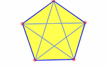

A diagonal of a polygon is a line segment joining two vertices. From any given vertex, there is no diagonal to the vertex on either side of it, since that would lay on top of a side. Also, there is obviously no diagonal from a vertex back to itself. This means there are three less diagonals than there are vertices. (diagonals to itself and one either side are not counted).
As described above, the number of diagonals from a single vertex is three less than the the number of vertices or sides, or (n-3).
There are N vertices, which gives us n(n-3) diagonals
But each diagonal has two ends, so this would count each one twice. So as a final step we divide by 2, for the final formula: whereOne of the characteristics of a concave polygon is that some diagonals will lie outside the polygon. In the figure above uncheck the 'regular" checkbox. The drag one of the vertices towards the center of the polygon. You will see white areas appear. The polygon is filled with a yellow color, so what you are seeing is a diagonal that lies outside the concave polygon.

The above formula gives us the number of distinct diagonals - that is, the number of actual line segments. It is easy to miscount the diagonals of a polygon when doing it by eye.If you glance quickly at the pentagon on the right, you may be tempted to say that the number of diagonals is 10. After all, there are two at each vertex, and 5 vertices. Some people see them making three triangles, for 6 diagonals. But there are only 5 diagonals. Count them carefully.